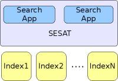
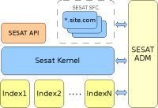
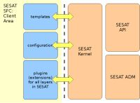

| Sesat > Features > Product Whitepaper |
Get Sesat
Documentation
Development
Projects
Commons
Sitemap
Sesat Whitepaper
Do you need help to convince your boss 
Preface
Sesat - SEsam Search Application Toolkit - is a stack of software applications aiming to help efficient creation of feature-rich, stable and multi-source based search portals and search applications. Based on experience and learnings from the first installations of Sesam.no and Sesam.se, Sesat is now an extensive toolkit with one primary focus: reduce development complexity and dramatically improve quality and delivery time. In fact, Sesat lets customers create fully-functional portals in a few days rather than many months, as proved by the teams behind Sesam.no and Sesam.se, all using Sesat to speed up site and site search development.
In general, writing a search application from scratch given only one or more indexes providing search results as data objects or XML, the following steps are usual:
- Create an application where the user types a search query
- Create a search function for each of the data sources to be searched in, tailored to the index profile / index data model
- The application queries each of the data sources in turn
- Display the results to the user
But, this is not at all flexible or scalable, with code that needs to be rewritten and tailored to any change in the underlying data source models. A much better approach would be to:
- Define a dynamic data model for each of the indexes to be searched in
- Implement either a parallel or a sequential search function that takes the search string and queries the different data sources, collects the data and delivers it to a templating engine. For such a function to be stable, it should
- Be able to analyse the search query to predict which indexes are worth searching in
- Handle faulty indexes
- Handle slow response time together with increased traffic, preventing resource starvation
- Handle the different APIs for the different indexes
- Have a model for unifying/normalising the search result
- Be robust when the index model / index profile changes (there should be no need to alter the search function)
- Implement a template engine that gets data from the search function and display it to the user
- Implement a logger that can register all searches with details about the user client, search context, zero-hits, index response time etc.
- Implement some sort of rules engine that triggers on particular terms in the search query, to intelligently boost which data source should be displayed first
- Allow for the application to present search results differently depending on IP-range, user session id, personalisation settings.
- Design templates to display the result
With Sesat, you get all of the above by
- Set up your development environment,
- Define your data sources in a configuration file, and
- Hack the example templates that is included.
Introduction
The Sesam Search Application Toolkit, Sesat, is the heart of the http://sesam.no and http://sesam.se search portals. These portals show the power and flexibility of a platform enabling businesses to present both structured and un-structured information from many sources simultaneously, while honoring the user's search context and choices.
Sesat is built on experience and learnings from the first version of the sesam.no portal, and has grown both in maturity and functionality with the tasks given. It has all the time been an important goal to deliver as much flexibility and functionality to the user as possible, while keeping the "core" application stable. Sesam is today successfully leveraging the flexibility of this architecture, focusing on developing their portal rather than the underlying search technology.
Executive Summary
Sesat includes a set of applications working together to provide a feature-rich search middleware. Sesat glues together information from underlying indexes and data sources and passes it on to the presentation layer. The toolkit has excellent support for all recent versions of the FAST search engine, as well as many other data sources. It is easy to create own connectors to underlying data layers and sources.
The traditional way of creating a search portal or a search application, is to develop a full stack of components from the lowest layer comminicating directly with search apis, to the templating layer on top.
In effect, Sesat gives you most of these components, so the developer can focus on being productive with front-end coding.
|  | Overview of the Sesat Model: The developer focus on functionality rather than middleware and interface coding. |
{kind=link}
The main parts of Sesat, organising all libaries, applications and tools, are:
- Sesat Kernel - the main application, handling the actual search analysis, content search and result presentation.
- Sesat API - Application Programmers Interface. Sesat exposes many of its functions as WebServices and XML interfaces. This is key to Ajax functionality and for client applications where the Sesat SFC is not an option.
- Sesat SFC - Search Front-end Container. This is where client applications reside, and were they utilise the functionality present in the Sesat Kernel.
- Sesat Adm - administrative plugins and applications. Sesat comes with a portal setup based on JBoss Portals.
|  | Client applications reside within the Search Front-end Container, SFC. One Sesat-installation can handle multiple client applicatins, or "vhosts", virtual hosts. For example, one single kernel can control and support sesam.no, sesam.se, vg.sesam.no, svd.sesam.se, sports.svd.sesam.se... |
{kind=link}
Key points:
- Sesat is not tied to any particular search engine or data storage. The customer may easily provide his own search interfaces and make them available to the Sesat Kernel.
- Sesat uses unicode (UTF-8) throughout, and is as such compatible with most languages and character sets.
- Sesat makes it possible to create search portals and search applications fast without worrying about internals of search engine APIs or writing display code, business logic etc. The developer's focus is entirely on the portal's functionality.
- Sesat is a mature search application framework that has been under heavy develpment since authumn 2005. It has an exiting roadmap which includes personalisation, session-handling, Ajax-capabilities, rules engines, statistics tools and administrative tools.
- Sesat is an open architecture. The customer have access to all source code, and can submit code to the project.
- Sesat uses Open Source applications and libraries. No commercial software needs to be installed to run Sesat.
- Extensibility. Extremely modular and pluggable architecture.
Architecture
Overview
Sesat implements a search portal middeware. It lives in the layer between the application's presentation templates and one or more data sources. It is flexible enough to handle many different types of sources:
- FAST-indexes
- Lucene-indexes
- WebServices
- XML-RPC
and many more. It is very easy to extend the engine to handle other search interfaces.
The power of Sesat is its ability to search in multiple indexes at the same time, and then create a java object containing all results. This object can then be accessed either via templates (eg Velocity or JSP), or by Ajax-calls. Sesat understands user sessions, and therefore the object can be kept ready for subsequent calls and transactions.
Sesat is controlled by configuration. Some of this configuration is done by means of administrative tools - Sesat ADM. The administrative tools are implemented to run on JBoss Portals, a portal framework compliant to JSR-168, running on JBoss application servers. This framework is also home of several administrative plugins, like personalisation and statistics.
|  | On the left-hand side, in the Search Front-end Container, the client defines his templates. These are being run by the Sesat Kernel upon user requests. Also, the client provides information about which indexes is to be used, which analysis rules apply etc. In addition, most of the layers in the Kernel define a Service Provider Interface, SPI. The user can implement extensions to functions within the Kernel, ensuring flexibility. |
{kind=link}
Architecture of an example application
Core components
A full Product Description also exists.
Sesat Kernel
Sesat Kernel runs as a web application within a web-server. The Sesat Kernel, the core to the search front, and the generic.sesam skin (SFC) serves as a search engine's controlling and presentation framework.
Currently, Tomcat and JBoss is supported. All access to a search application or portal, is managed by this part of Sesat. The Kernel is configured to work with a number of Virtual Hosts, vhosts. When starting the service, the Kernel loads information about all active vhosts. Each of these may have their own templates, indexes and configuration. Client code for any given vhost is initialised and loaded at this stage.
A full Kernel Feature list can be found here.
Search Lifecycle
Sesat SFC - Sesat Search Front-end Container
The SFC is where client applications run. They are deployed and directed by the Sesat Kernel.
Applications run within the same JVM as the Kernel. They are all deployed as .war-files to the same directory, by default.
The appplication names are the same as the vhost they implement.
Features:
- Very quick development and deployment of search application based on the kernel
- Flexible and configurable:
- skins, vhosts, ranking, indexes, analysis rules, navigators and enrichments
- Runs in the same JVM as the kernel for speed, but can run on a separate JVM for security.
- Defined logfiles for developer debugging and statistics.
Sesat API
Most Kernel functionality is accessible from WebServices and the XML-interface. This is important functionality external applications that needs to communicate with Sesat. For example, mobile applications have been developed to perform searches using the XML API.
Features:
- XML RESTful API.
- RSS / Atom feeds automatically generated from any already configured query.
- XML-RPC:
- XML-based API with full support for all services in the kernel. Provided to tightly integrated partners.
- Output configurable on a per-partner basis
- Security services
- Web Services (WS)
- WS for loosely coupled client application
Please note that XML-RPC and Web Services to Sesat are not yet implemented - We had great plans for XML-RPC and/or a Web Service API but us, and all our partners, always come back to using RSS (or custom XML) feeds. That's because at the moment the API, like most search APIs, is all RESTful so URL requests and XML (or serialised datamodel) responses gives you the full API.
Sesat ADM
(source code to ADM not yet released)
The Sesat admin is a collection of applications and tools that run in a JBoss Portals server. The applications interact with various parts of Sesat, for example the Statistics engine.
Sesat Admin consists of portlets and applications running on JBoss Portals (server), which is a standards-compliant (JSR-168) portal. As of version 1.0 of Sesat, the following appliacions are available:
- User Administration Portlet (require usage of OpenLDAP). The administrator can define users, groups and roles, and ensure that access to other administrative systems or the search portal are prohibited and controlled.
- Statistics Portlet, providing simple statistics of queries and traffic through parsing of the logfiles.
- FAST Lists Editor (version 1.0 of Sesat). FAST Lists are lookup-tables within the FAST engine that are used when analysing search queries.
- Rules Engine Portlet (version 1.2 of Sesat)
- Personalisation Manager (version 1.2 of Sesat)
Sesat License
You may use Sesat under the Affero GPLv3 license. This is a Free Software and Open Source license. All your source code including that belonging to derivative works must be made freely available to any user that interacts with the software locally or via any network (eg the internet) unless you choose to bundle it as "aggregated work".